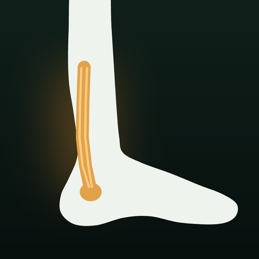

Achilló
Jon's Achilles rehab app. Add this source to AltStore once; updates show up there.
Add to AltStorehttps://raw.githubusercontent.com/jyvisuals/achillo/main/apps.json

Jon's Achilles rehab app. Add this source to AltStore once; updates show up there.
Add to AltStorehttps://raw.githubusercontent.com/jyvisuals/achillo/main/apps.json